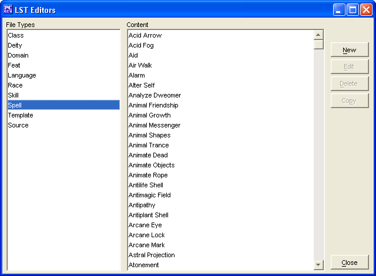

The Spell Editor is to create you own Spells, edit ones you have already made, and in the future will allow you to edit existing Spells (from other data/list files).
The New button will allow the creation of a new Spell.
The Edit button will allow you to edit the selected Spell (Spells created within this Spell Editor only at this stage).
The Delete button will remove the selected Spell (Spells created within this Spell Editor only at this stage).
The Copy button makes a copy of a selected Spell. In this way you can slightly modify an existing Spell and give it a new name.
The Close button will allow you to exit back to PCGen.
Spells added will be saved into the customSpells.lst file.